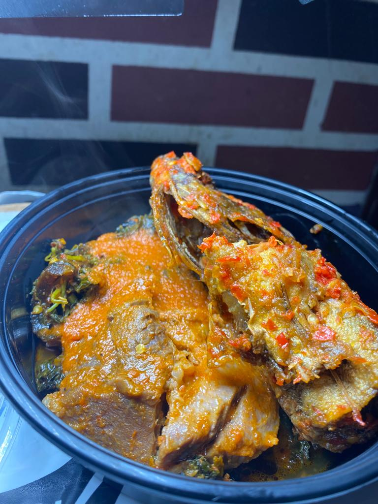

BRINGING DELICIOUS DELICACIES
TO IBADAN
Welcome to D.coal kitchen,one of the fastest rising restaurant in Ibadan,We are inspired to satisfy our customers with delicious delicacies of Nigerian foods.today,D.coal kitchen is a popular destination for both catering services and Nigerian made foods
Whether you are looking for a quick and tasty lunch at your desk or want to impress your guests with locally made dishes at your events,D.coal kitchen has got you covered.please schedule your local catering services or pre order your food at least 24 hours in advance.we look forward to serving you
SHARE THE GOOD NEWS
Looking forward to a unique and unforgettable local catering services and a finger licking delightful experience? look no further than D.coal kitchen.We offer a rich cultural experience with local Nigerian dishes and a wide variety of Nigerian cuisine.our professional chefs use only the freshest ingredient to cater for all your events and occasions.
At D.coal kitchen,we are passionate about satisfying our customers,our great customer services and attention to detail guarantees your maximum delight and ensures that every visit is a memorable one.come and discover the rich flavours and dishes at D.coal kitchen.
Catering Services
Family Pack
Special Orders

Combo Package
Delivery Pack
Single Order
CONVIENTLY LOCATED IN THE CITY OF IBADAN
D.coal Kitchen is conveniently located in the heart of Ibadan,Oyo State capital city. Our central location makes it easy for you to enjoy our delicious meals, whether you are taking a lunch break from work, looking for a catering service or exploring the city’s many attractions. Come and discover the authentic flavors at D.coal Kitchen!
Our customers rave about our take-out food, and with our convenient location near major employers and main roads in Ibadan,Oyo State, it’s easy to enjoy our delicious meals wherever you go. Take your lunch back to the office. Call us now at 09028877967 to arrange for Nigerian food services. We look forward to serving you!